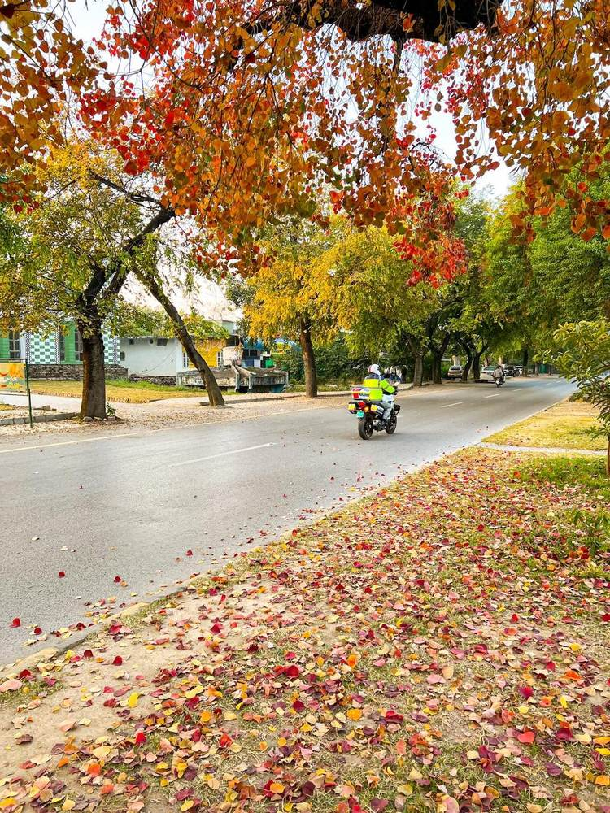
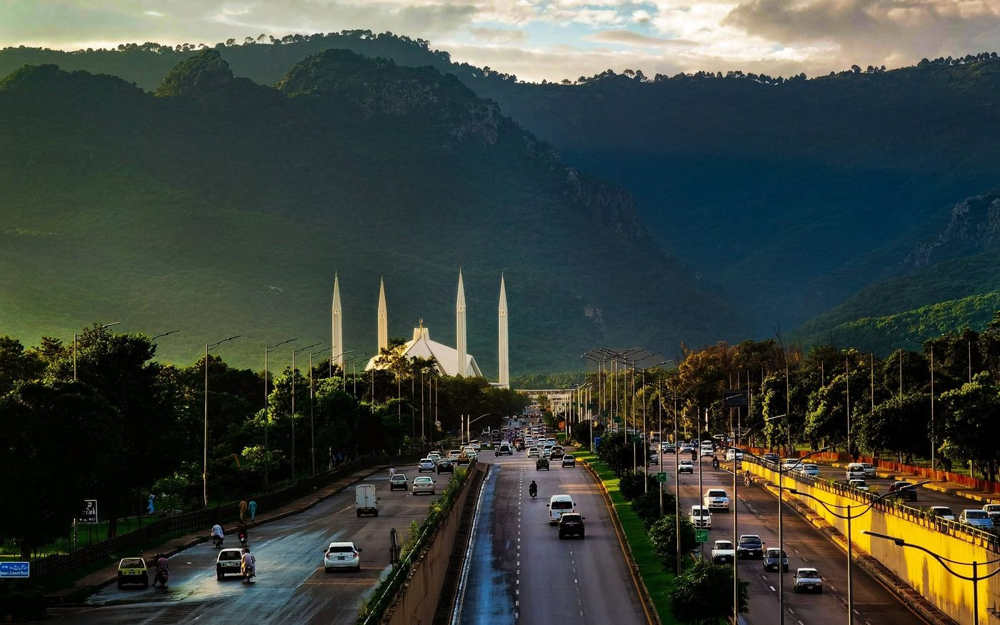
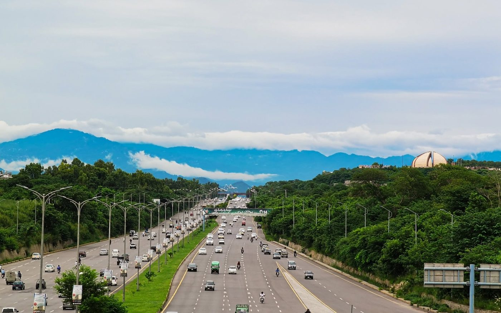

Editorial collage of Abdul Sattar Edhi, Indus Valley ruins, the Flag of Pakistan, northern mountains and Faisal Mosque.
The Indus Land
Explore the Indus land — its people, places, culture,
history and natural beauty.
پاکستان میں خوش آمدید
دریائے سندھ کی سرزمین، تاریخ، ثقافت، عوام اور قدرتی حسن کا ایک جامع سفر
People • Places • Heritage • Tomorrow
An ancient civilisation.
A rich heritage.
A vibrant people.
A shared future.
Discover the people, places, landscapes, stories and traditions that make Pakistan unique.
From province to district, discover Pakistan in detail.
*About 241.5 million for the four provinces plus ICT (PBS 2023). AJK and Gilgit-Baltistan are counted separately. Open a card to read every district in that unit.
Pakistan — past, present and future, together.


Different Lands · One People · A Shared Home
Abdul Sattar Edhi photograph: Hussain, Wikimedia Commons, CC BY-SA 3.0. Islamabad photographs: islamabadians.